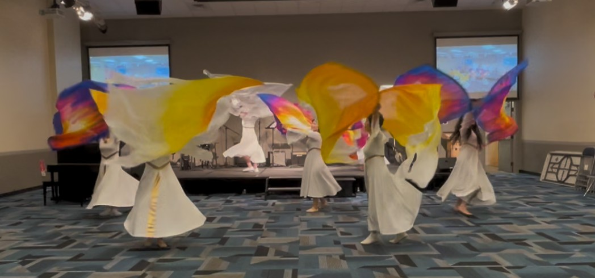

To raise up banner warriors for God across the nations of the world, to awaken and strengthen the spiritual lives of brothers and sisters, to wave banners in these end times, to usher in the mighty presence of God, to testify to His beauty and glory, and to expand the territory of the Kingdom of God.
We cleanse our hearts and come before God in spirit and in truth, offering worship and praise that are pleasing to Him.
We honor the spiritual order established by God, esteeming one another in truth and love—being sincere and without hypocrisy, humble and submissive, rejoicing always, praying without ceasing, and giving thanks in all circumstances.
We fix our eyes on Jesus, hunger for the presence of the Holy Spirit, and trust in God's abundant provision. We do not seek our own glory or interests, but desire only that God's name be lifted high, becoming a beautiful testimony.
With faithfulness, unity, and wholehearted commitment, we prepare for every act of service, offering our very best to God and glorifying His name.
Rev. Liu Tong
Senior Pastor, Silicon Valley River of Life Christian Church
Rev. Greg Holsclaw
President, Global Christian University; Senior Pastor, Revival Valley
Wings of Shalom is a 501(c)(3) Nonprofit Organization